15 Classical Hypothesis Testing
15.1 Objectives
The objective of this module is to introduce basic hypothesis testing from a classical or “frequentist” statistics approach.
15.2 Preliminaries
- Load {tidyverse} and {mosaic}
15.3 Null and Alternative Hypotheses
Classical hypothesis testing typically involves formally stating a claim - the null hypothesis - which is then followed up by statistical evaluation of the null versus an alternative hypothesis. The null hypothesis is interpreted as a baseline hypothesis and is the claim that is presumed to be true. That claim is typically that a particular value of a population parameter estimated by a sample statistic we have calculated is consistent with a particular null expectation. The alternative hypothesis is the conjecture that we are testing, usually that the sample statistic is inconsistent with a null expectation.
Typically, our null and alternative hypotheses are expressed something like as follows:
- \(H_0\) = null hypothesis = a sample statistic shows no deviation from what is expected or neutral based on the parameter space of possible outcomes under the presumed random sampling process.
NOTE: This parameter space is defined both by how we sample and how we intend to sample, including our stopping rules (e.g., number of observations, amount of time we plan to sample, and so on).
- \(H_A\) = alternative hypothesis = a sample statistic deviates more than expected by chance from what is expected or neutral.
We can test several different comparisons between \(H_0\) and \(H_A\).
- \(H_A > H_0\), which constitutes an “upper one-tailed test” (i.e., our sample statistic is greater than that expected under the null)
- \(H_A < H_0\), which constitutes a “lower one-tailed test” (i.e., our sample statistic is less than that expected under the null)
- \(H_A ≠ H_0\), which constitutes a “two-tailed test” (i.e., our sample statistic is different, maybe greater maybe less, than that expected under the null)
To formally do any statistical test under such a “null hypothesis significance testing” (or NHST) framework, we need some kind of statistical evidence - typically based on probabilities and confidence intervals - to reject the null hypothesis in favor of an alternative hypothesis. This evidence involves considering some measure of how unexpected it would be for a sample we have collected to have been drawn, by chance, from a particular null distribution.
To effect a hypothesis test, we then need to…
- Calculate a test statistic based on our data.
- Calculate the p value associated with that test statistic, which is the probability of obtaining, by chance, a test statistic that is as high or higher than our calculated one, assuming the null hypothesis is true. Classically, this is done by comparing the value to some appropriate standardized sampling distribution with well-known mathematical properties (e.g., normal or \(t\)) to yield the p value.
- Evaluate whether the p value is less than or greater than the significance level, or \(\alpha\), that we set for our test. That is, \(\alpha\) can be thought of as the cutoff level for p values below which we feel comfortable rejecting a null hypothesis (i.e., we reject \(H_0\) when \(p < \alpha\)).
Under the null hypothesis significance testing framework, there are then four possible outcomes to our statistical decision, each with an associated probability:
| What is True | What We Decide | Result |
|---|---|---|
| \(H_0\) | \(H_0\) | Correctly “accept” the null (\(1 - \alpha\)) |
| \(H_0\) | \(H_A\) | Falsely reject the null (Type I error) \(\alpha\) |
| \(H_A\) | \(H_0\) | Falsely “accept” the null (Type II error) \(\beta\) |
| \(H_A\) | \(H_A\) | Correctly reject the null (\(1 - \beta\)), or “power” |
We typically approach hypothesis testing by trying to minimize our probability of committing a Type I error (\(\alpha\))… i.e., we aim for having a high bar for falsely rejecting the null hypothesis (e.g., for incorrectly finding an innocent person guilty) and thus set \(\alpha\) very low (0.05 or 0.01) to reflect what we decide is an acceptable level of Type I error.
When we set a high bar for falsely rejecting the null, we necessarily lower the bar for incorrectly accepting (i.e., for failing to reject) the null (e.g., for concluding that a guilty person is innocent). The probability of incorrectly “accepting” the null is referred to as Type II error (\(\beta\)). The “power” of a statistical test is (\(1 - \beta\)), the probability with which we correctly reject the null.
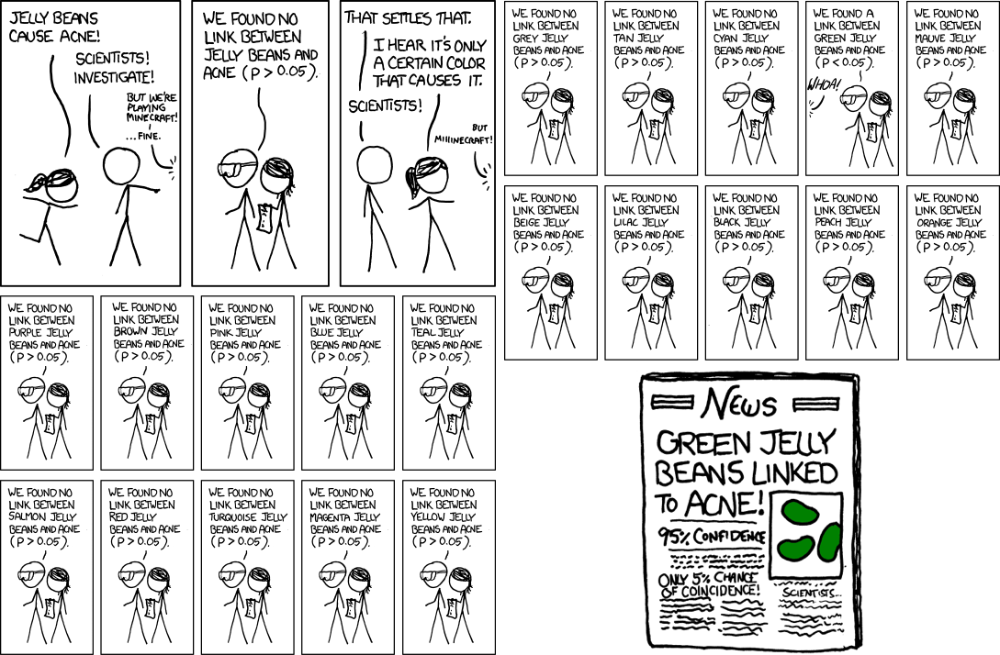
15.4 Parametric Hypothesis Testing
In traditional parametric statistics, we make the assumption that the sampling distribution of our statistic of interest (e.g., a mean) takes the form of a particular well-understood mathematical distribution (e.g., the normal), and we calculate a test statistic that basically summarizes the “location” of a summary statistic about our data relative to that implied, theoretical sampling distribution.
The particular value of our test statistic is determined by both the difference between the original sample statistic and the expected null value (e.g., the difference between the mean of our sample and the expected population mean) and the standard error of the sample statistic. The value of our test statistic (i.e., the “distance” of that test statistic from what is expected) and the shape of the presumed sampling distribution for that statistic are the sole drivers of the smallness of the p value. The p value effectively represents the area under the sampling distribution associated with test statistic values as or more extreme than the one we observed.
How do we calculate the p value for a parametric test?
Specify the sample statistic we want to evaluate (e.g., the mean).
Specify the test statistic of interest and the form of the sampling distribution for that statistic (e.g., \(Z\) or \(T\) and a standard normal or T distribution).
Calculate the tail probability, i.e., the probability of obtaining a statistic (e.g., a mean) as or more extreme than was observed assuming that null distribution.
15.4.1 Important Comments on P Values
The p value is simply the probability of seeing some descriptive statistic (mean, median, regression coefficient, whatever) given the data you have and given particular assumptions you make about the model generating the data! The p value says nothing about effect size, biological meaning, or the accuracy of the model.
Statistical “significance”, i.e., if some statistic you calculate has a low p value, does NOT mean the effect is strong is or biologically important!
There is no problem with reporting p values… but using p values as line for dichotomously classifying results into “significant” versus “not significant” (or for interpreting results in this way) is problematic and not good statistical practice!
Finally, it is valuable, I believe, to contrast p values as estimated via the classical/Fisherian frequentist approaches where the “model” generating the data is one that is reasonably approximated by some well-characterized mathematical distribution (Gaussian, binomial, etc.) versus p values estimated based on permutation/resampling from the particular data we have collected (see Module 16. That latter approach is much more relevant for the situation that many of us in this class face, where we often do not have a good idea about what the data-generating model or the resultant distribution of the data is likely to be.
Working with Means
One Sample \(Z\) and \(T\) Test
Let’s do an example where we try to evaluate whether the mean of a single set of observations is significantly different than that expected under a null hypothesis… i.e., this is a ONE-SAMPLE test.
Suppose we have a vector describing the adult weights of vervet monkeys trapped in South Africa during the 2015 trapping season. We have the sense they are heavier than vervets we trapped in previous years, which averaged 5.0 kilograms. We calculate the mean of our sample of trapped vervets and then need to decide whether that mean is significantly greater than our expectation based on prior information.
First, we read in our data:
f <- "https://raw.githubusercontent.com/difiore/ada-datasets/main/vervet-weights.csv"
d <- read_csv(f, col_names = TRUE)
head(d)## # A tibble: 6 × 2
## id weight
## <dbl> <dbl>
## 1 1 5.17
## 2 2 7.13
## 3 3 4.7
## 4 4 6.1
## 5 5 6.36
## 6 6 4.93mean(d$weight)## [1] 5.323922- What is our \(H_0\)?
- What is our \(H_A\)?
- What is the hypothesis we want to test? Is it two-tailed? Upper-tailed? Lower-tailed?
- Calculate the mean, standard deviation, and SE of the sample
Show Code
mu <- 5
x <- d$weight # current weights
n <- length(x)
(m <- mean(x))## [1] 5.323922Show Code
(s <- sd(x))## [1] 0.9754016Show Code
(se <- s/sqrt(n))## [1] 0.1365835- Plot a histogram of the sample
Show Code
histogram(x, breaks = seq(from = m - 4 * s, to = m + 4 * s, length.out = 20), main = "Histogram of Vervet\nWeights",
xlab = "X", ylab = "Proportion of Total", type = "density", ylim = c(0, 3), col = rgb(0,
0, 1, 0.5))
ladd(panel.abline(v = mu, col = "black", lty = 1, lwd = 2)) # expected mean
ladd(panel.abline(v = m, col = "black", lty = 3, lwd = 2)) # observed mean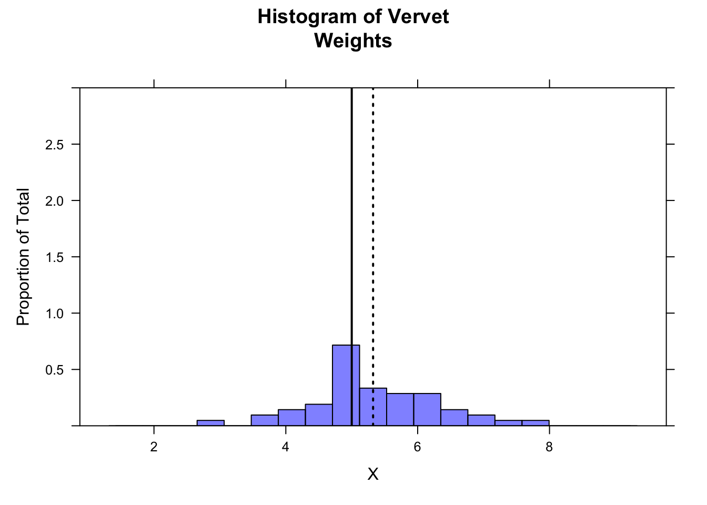
- Using the
plotDist()function from {mosaic}, plot the location of your sample mean, the sampling distribution suggested by your sample’s standard error, and the location of the expected mean from the 2015 data.
Show Code
plotDist("norm", mean = m, sd = se, xlim = c(m - 4 * se, m + 4 * se), add = TRUE,
lwd = 1, col = "black", lty = 1)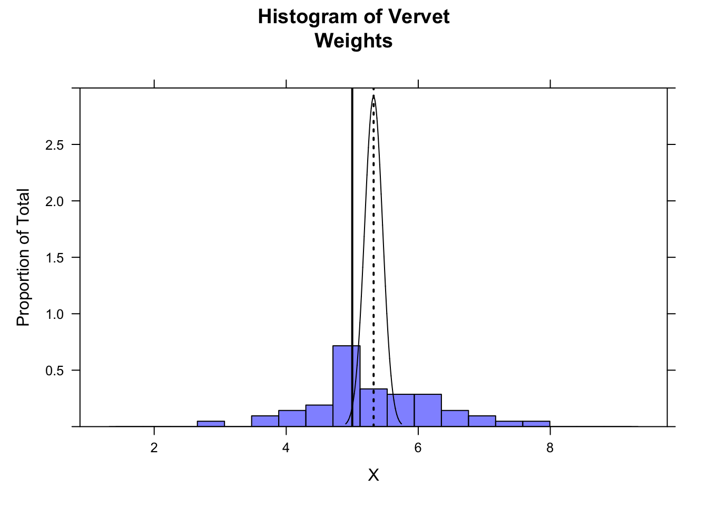
The following code demonstrates that more than 95% of the sampling distribution suggested by your sample is above the expected mean of 5.0…
z <- qnorm(0.05) # define lower bound of upper 95% of distribution
ladd(panel.polygon(cbind(c(m + z * se, seq(from = m + z * se, to = max(x), length.out = 1000),
max(x)), c(0, dnorm(seq(from = m + z * se, to = max(x), length.out = 1000), m,
se), 0)), border = "black", col = rgb(1, 0, 1, 0.5)))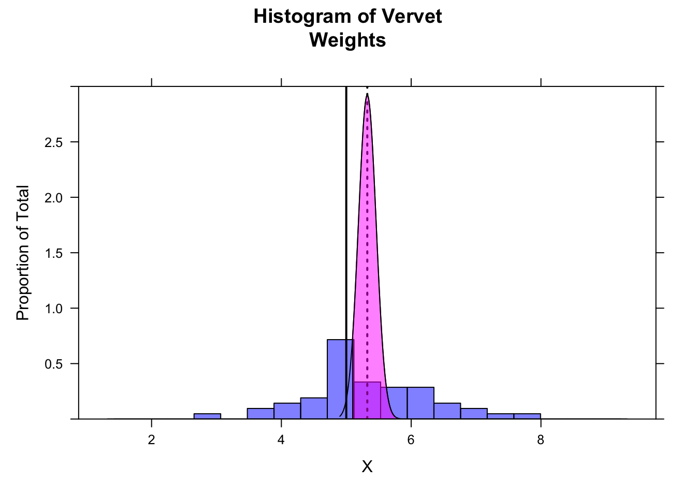
For a formal statistical test of whether our sample mean is greater than the expected mean, we first calculate the test statistic. It takes a familiar form… it is effectively the position of our sample mean relative to the expected population mean and the expected population standard deviation (which we have estimated from our sample).
\[Z = \frac{\bar{x}-\mu}{s/\sqrt{n}}\]
where:
- \(\bar{x}\) = mean of sample observations
- \(\mu\) = expected mean
- \(s\) = sample standard deviation (as an estimate of the population SD)
- \(n\) = number of sample observations
Or, to use our variables from above…
z <- (m - mu)/se
z## [1] 2.3716In this case, our test statistic, \(Z\), is a quantile… the estimated number of standard errors away from the expected population mean that our sample mean falls based on the implied sampling distribution. If our sample mean is greater than expected, then the test statistic is positive; if our sample mean is less than expected, then the test statistic is negative.
To evaluate whether \(Z\) is “significant” under a NHST framework, we need to calculate the total probability of our seeing a deviation from the expected mean as great or greater than this by chance. For a two-tailed test, this deviation can be in either the positive or negative direction, while for a one-tailed test, we are only interested in the probability associated with our specific alternative hypothesis (i.e., \(\mu_{H_A} \gt \mu_{H_0}\) or \(\mu_{H_A} \lt \mu_{H_0}\)).
To calculate these probabilities, we can use the pnorm() function. Because in calculating a \(Z\) score we have converted our sample mean to the standard normal scale, the mean= and sd= arguments of pnorm() are the defaults of 0 and 1, respectively.
For this specific example, where we want to test the idea that our sample mean is greater than expected, we want the probability of seeing a \(Z\) as large or larger by chance. This corresponds to the area under the normal curve to the right of \(Z\) (the “upper.tail”), which we can calculate as:
p <- 1 - pnorm(z)
p## [1] 0.008855621# or
p <- pnorm(z, lower.tail = FALSE)
p## [1] 0.008855621To visualize this on a standard normal curve…
plotDist("norm", main = paste0("Standard Normal Distribution\nblue area = ", round(p,
4) * 100, "%"), ylab = "", xlab = "SD")
ladd(panel.abline(v = z, col = "blue", lty = 1, lwd = 2))
ladd(panel.polygon(cbind(c(z, seq(from = z, to = 4, length.out = 100), 4), c(0, dnorm(seq(from = z,
to = 4, length.out = 100), 0, 1), 0)), border = "black", col = rgb(0, 0, 1, 0.5)))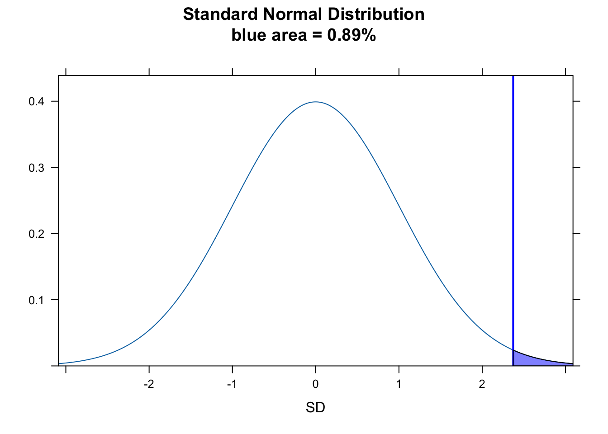
We can also consider the “significance” in a different way, by asking does our value for \(Z\) fall in the upper 5% of the normal distribution for \(Z\) scores. For this, we can use qnorm() to return the critical value demarking the boundary of the upper 5% of the distribution and see of \(Z\) falls to the right of that, which indeed it does.
plotDist("norm", main = paste0("Standard Normal Distribution\nred area = upper 5%"),
ylab = "", xlab = "SD")
ladd(panel.abline(v = z, col = "blue", lty = 1, lwd = 2))
critical_val <- qnorm(0.95)
ladd(panel.abline(v = critical_val, col = "red", lty = 2, lwd = 2))
ladd(panel.polygon(cbind(c(critical_val, seq(from = critical_val, to = 4, length.out = 100),
4), c(0, dnorm(seq(from = critical_val, to = 4, length.out = 100), 0, 1), 0)),
border = "black", col = rgb(1, 0, 0, 0.5)))
ladd(panel.polygon(cbind(c(z, seq(from = z, to = 4, length.out = 100), 4), c(0, dnorm(seq(from = z,
to = 4, length.out = 100), 0, 1), 0)), border = "black", col = rgb(0, 0, 1, 0.5)))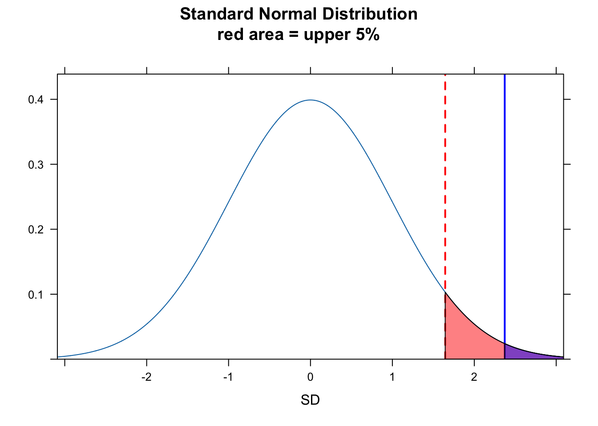
Another way to think about whether there is a “significant” difference between our observed and expected mean weight is to look at the 95% CI around our estimate of mean weight. We can calculate this by hand for the one-tailed test…
alpha <- 0.05
ci <- m - qnorm(1 - alpha, mean = 0, sd = 1) * se # by hand... lower limit for 95% of sampling distribution
histogram(x, breaks = seq(from = m - 4 * s, to = m + 4 * s, length.out = 20), main = "Histogram of Vervet\nWeights",
xlab = "X", ylab = "Proportion of Total", type = "density", ylim = c(0, 3), col = rgb(0,
0, 1, 0.5))
ladd(panel.abline(v = mu, col = "black", lty = 1, lwd = 2)) # expected mean
ladd(panel.abline(v = m, col = "black", lty = 3, lwd = 2)) # observed mean
ladd(panel.abline(v = ci, col = "red", lty = 3, lwd = 2)) # lower bound for 95% CI
z <- qnorm(0.05) # define lower bound of upper 95% of distribution
ladd(panel.polygon(cbind(c(m + z * se, seq(from = m + z * se, to = max(x), length.out = 1000),
max(x)), c(0, dnorm(seq(from = m + z * se, to = max(x), length.out = 1000), m,
se), 0)), border = "black", col = rgb(1, 0, 1, 0.5)))… and for a two-tailed CI…
ci <- m + c(-1, 1) * qnorm(1 - alpha/2, mean = 0, sd = 1) * se # by hand...
ladd(panel.abline(v = ci, col = "red", lty = 3, lwd = 2)) # upper and lower bounds for 95% CIAs noted above, our sample size from a population is typically limited. So, instead of using the normal distribution (as we did here) to determine the p value of our statistic, we actually should use the \(t\) distribution, which, as we have seen, has slightly fatter tails. The statistic and process is exactly the same, though, as for the normal distribution.
\[T = \frac{\bar{x}-\mu}{s/\sqrt{n}}\]
or, equivalently…
\[T = \frac{\bar{x}-\mu}{\sqrt{s^2/n}}\]
with
\[df = n - 1\]
z <- (m - mu)/se
(p <- 1 - pt(z, df = n - 1))## [1] 0.01080157(p <- pt(z, df = n - 1, lower.tail = FALSE))## [1] 0.01080157(critical_val <- qt(0.95, df = n - 1))## [1] 1.675905plotDist("t", df = n - 1, main = paste0("t Distribution with DF = ", n - 1, "\nblue area = ",
round(p, 4) * 100, "%"), ylab = "", xlab = "SD")
ladd(panel.abline(v = z, col = "blue", lty = 1, lwd = 2))
ladd(panel.polygon(cbind(c(z, seq(from = z, to = 4, length.out = 100), 4), c(0, dt(seq(from = z,
to = 4, length.out = 100), df = n - 1), 0)), border = "black", col = rgb(0, 0,
1, 0.5)))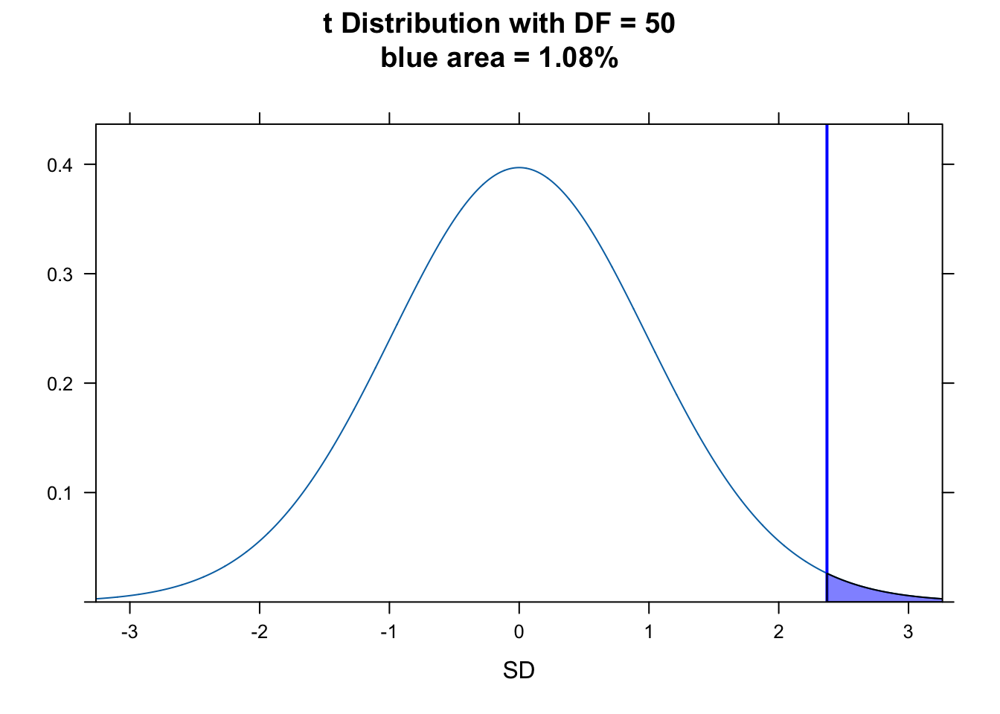
R has built into it a single function, t.test(), that lets us do all this in one line. We give it our data and the expected population mean, \(\mu\), along with the kind of test we want to do.
t_stat <- t.test(x = x, mu = mu, alternative = "greater")
t_stat # the value of the t statistic is a Z score##
## One Sample t-test
##
## data: x
## t = 2.3716, df = 50, p-value = 0.0108
## alternative hypothesis: true mean is greater than 5
## 95 percent confidence interval:
## 5.095021 Inf
## sample estimates:
## mean of x
## 5.323922Note that the t.test() function to also calculates \(t\)- distribution based CIs for us easily. For the above test, the 95% CI is open-ended on the upper end because we are doing a one-tailed test. Doing the same thing by hand…
alpha <- 0.05
ci <- c(m - qt(1 - alpha, df = n - 1) * se, Inf) # lower bound calculated by hand... note we do not divide alpha by 2
ci## [1] 5.095021 InfFor an equivalent two-tailed test with the same data…
t_stat <- t.test(x = x, mu = mu, alternative = "two.sided")
ci <- t_stat$conf.int # using t test
ci## [1] 5.049585 5.598258
## attr(,"conf.level")
## [1] 0.95ci <- m + c(-1, 1) * qt(1 - alpha/2, df = n - 1) * se # upper and lower bounds calculated by hand
ci## [1] 5.049585 5.598258CHALLENGE
Adult lowland woolly monkeys are reported to have an average body weight of 7.2 kilograms. You are working with an isolated population of woolly monkeys from the Colombian Andes that you think may be a different species from lowland form, and you collect a sample of 15 weights from adult individuals at that site. From your sample, you calculate a mean of 6.43 kilograms and a standard deviation of 0.89 kilograms. Perform a hypothesis test to evaluate whether body weights in your population are different from the reported average for lowland woolly monkeys by setting up a “two-tailed” hypothesis, carrying out the analysis, and interpreting the p value (assume the significance level is \(\alpha\) = 0.05).
HINT: Your sample size is < 30, so you should use the \(t\) distribution and do a t test. Do your calculations both by hand and using the
t.test()function and confirm that they match.
First, read in the data:
f <- "https://raw.githubusercontent.com/difiore/ada-datasets/main/woolly-weights.csv"
d <- read_csv(f, col_names = TRUE)
head(d)## # A tibble: 6 × 2
## id weight
## <dbl> <dbl>
## 1 1 6.14
## 2 2 6.19
## 3 3 7.08
## 4 4 5.67
## 5 5 4.83
## 6 6 6.83Then, calculate the mean, standard deviation, and SE of your sample:
Show Code
x <- d$weight
n <- length(x)
(m <- mean(x))Show Output
## [1] 6.427333Show Code
(s <- sd(x))Show Output
## [1] 0.8968235Show Code
(se <- s/sqrt(n))Show Output
## [1] 0.2315588Finally, calculate the \(T\) statistic and then determine the p value associated with that statistic.
NOTE: Because this is a two-tailed test, we need to calculate the probability of seeing a \(T\) statistic as far from the mean in either the positive or negative direction. This is why we sum the probabilities associated with the upper and lower tails…
Show Code
mu <- 7.2
t_stat <- (m - mu)/se
t_statShow Output
## [1] -3.336805Show Code
p_upper <- 1 - pt(abs(t_stat), df = n - 1)
# or 1 - pt(t_stat, df=n-1, lower.tail = FALSE)
p_lower <- pt(-1 * abs(t_stat), df = n - 1)
# or pt(t_stat, df=n-1, lower.tail = TRUE)
p <- p_upper + p_lower
pShow Output
## [1] 0.004890693To visualize this…
plotDist("t", df = n - 1, main = paste0("t Distribution with DF = ", n - 1, "\nred area = 2.5% in each tail",
"\nblue = ", round(p, 4) * 100, "%"), ylab = "", xlab = "SD", xlim = c(-4, 4))
ladd(panel.abline(v = abs(t_stat), col = "blue", lty = 1, lwd = 2))
ladd(panel.abline(v = -1 * abs(t_stat), col = "blue", lty = 1, lwd = 2))
# plot upper tail
ladd(panel.polygon(cbind(c(abs(t_stat), seq(from = abs(t_stat), to = 4, length.out = 100),
4), c(0, dt(seq(from = abs(t_stat), to = 4, length.out = 100), df = n - 1), 0)),
border = "black", col = rgb(0, 0, 1, 0.5)))
# plot lower tail
ladd(panel.polygon(cbind(c(-4, seq(from = -4, to = -1 * abs(t_stat), length.out = 100),
-1 * abs(t_stat)), c(0, dt(seq(from = -4, to = -1 * abs(t_stat), length.out = 100),
df = n - 1), 0)), border = "black", col = rgb(0, 0, 1, 0.5)))
alpha <- 0.05
critical_val <- qt(1 - alpha/2, df = n - 1) # identify critical values - boundaries for 95% of the t distribution
ladd(panel.abline(v = abs(critical_val), col = "red", lty = 2, lwd = 2))
ladd(panel.abline(v = -1 * abs(critical_val), col = "red", lty = 2, lwd = 2))
ladd(panel.polygon(cbind(c(critical_val, seq(from = critical_val, to = 4, length.out = 100),
4), c(0, dt(seq(from = critical_val, to = 4, length.out = 100), df = n - 1),
0)), border = "black", col = rgb(1, 0, 0, 0.5)))
ladd(panel.polygon(cbind(c(-4, seq(from = -4, to = -1 * abs(critical_val), length.out = 100),
-1 * abs(critical_val)), c(0, dt(seq(from = -4, to = -1 * abs(critical_val),
length.out = 100), df = n - 1), 0)), border = "black", col = rgb(1, 0, 0, 0.5)))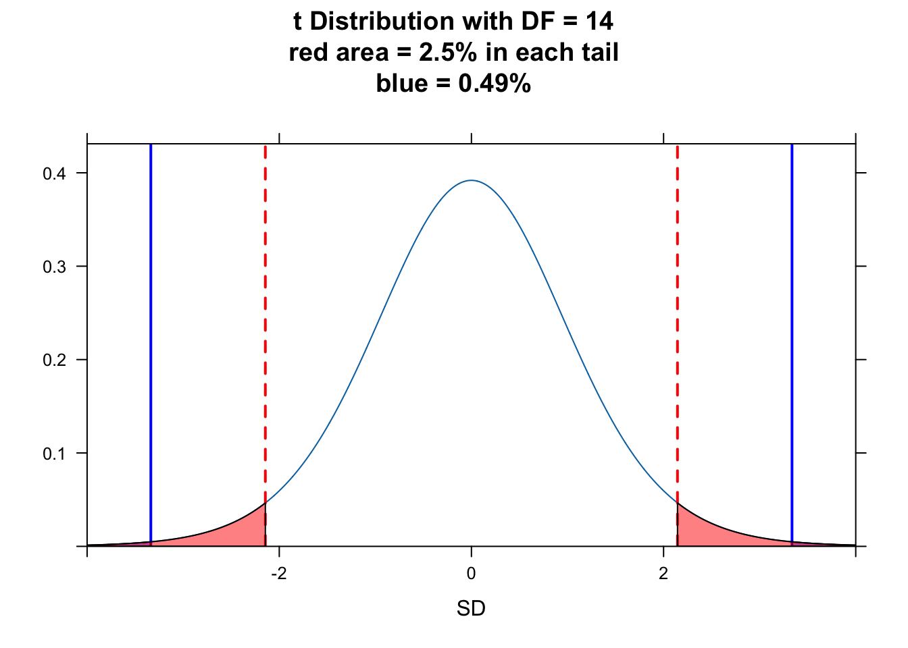
We can implement a simple test to see if the value of our \(T\) statistic is farther away from zero than the critical value…
test <- (abs(t_stat) > critical_val)
# boolean test as to whether t is larger than the critical value at either tail
test## [1] TRUEAnother way to think about whether there is a significant difference between our observed and expected mean weight is to look at the 95% CI around our estimate of mean weight. We can calculate this by hand or use the output of the t test…
(ci <- m + c(-1, 1) * critical_val * se) # by hand## [1] 5.930689 6.923978t.test(x = x, mu = mu, alternative = "two.sided") # `t.test()` function##
## One Sample t-test
##
## data: x
## t = -3.3368, df = 14, p-value = 0.004891
## alternative hypothesis: true mean is not equal to 7.2
## 95 percent confidence interval:
## 5.930689 6.923978
## sample estimates:
## mean of x
## 6.427333The 95% CI does not include the expected mean weight.
Two Sample \(Z\) and \(T\) Test
Sometimes we want to compare two groups of measurements to one another, which boils down to a hypothesis test for the difference between two means, \(\mu1\) and \(\mu2\). The null hypothesis is that the difference between these means is zero.
Before getting to the appropriate test, there are a couple of things that we need to consider:
[1] How, if at all, are the two samples related to one another? Sometimes we may have PAIRED samples (e.g., the same individuals before and after some treatment) and sometimes the samples are UNPAIRED or INDEPENDENT (e.g., weights for different samples of black-and-white colobus monkeys collected in the rainy versus dry seasons).
[2] Are the variances in the two samples roughly equal or not? E.g., if we are comparing male and female heights, are the variances comparable?
Samples with Unequal Variances
For the most generic case, where the two samples are independent and we cannot assume the variances of the two samples are equal, we can do what is called Welch’s t test where our test statistic is:
\[T = \frac{\bar{x_2} - \bar{x_1} - \mu}{\sqrt{s_1^2/n_1 + s_2^2/n_2}}\]
where:
- \(\bar{x_1}\) and \(\bar{x_2}\) = means of observations in each sample group
- \(\mu\) = expected difference in means between sample groups under the null hypothesis, which is usually zero
- \(s_1\) and \(s_2\) = standard deviations of each sample group
- \(n_1\) and \(n_2\) = numbers of observations in each sample group
CHALLENGE
Let’s do an example. Load in a file of black-and-white colobus weights and examine the str() of the file.
f <- "https://raw.githubusercontent.com/difiore/ada-datasets/main/colobus-weights.csv"
d <- read_csv(f, col_names = TRUE)
head(d)## # A tibble: 6 × 3
## id weight sex
## <dbl> <dbl> <chr>
## 1 1 7.24 male
## 2 2 6.09 male
## 3 3 6.97 male
## 4 4 6.98 male
## 5 5 6.08 male
## 6 6 6.22 maleThen, create two vectors, x and y, for male and female weights. Plot these in boxplots side by side and then calculate the mean, sd, and sample size for both males and females. Do the variances look similar for the two sexes?
Show Code
x <- d$weight[d$sex == "male"]
y <- d$weight[d$sex == "female"]
par(mfrow = c(1, 2))
minval <- min(c(x, y)) - 0.1
maxval <- max(c(x, y)) + 0.1
boxplot(x, ylim = c(minval, maxval), main = "Weight (kg)", xlab = "Males")
# `ylim=` argument uses x and y ranges to set range for y axis
boxplot(y, ylim = c(minval, maxval), main = "Weight (kg)", xlab = "Females")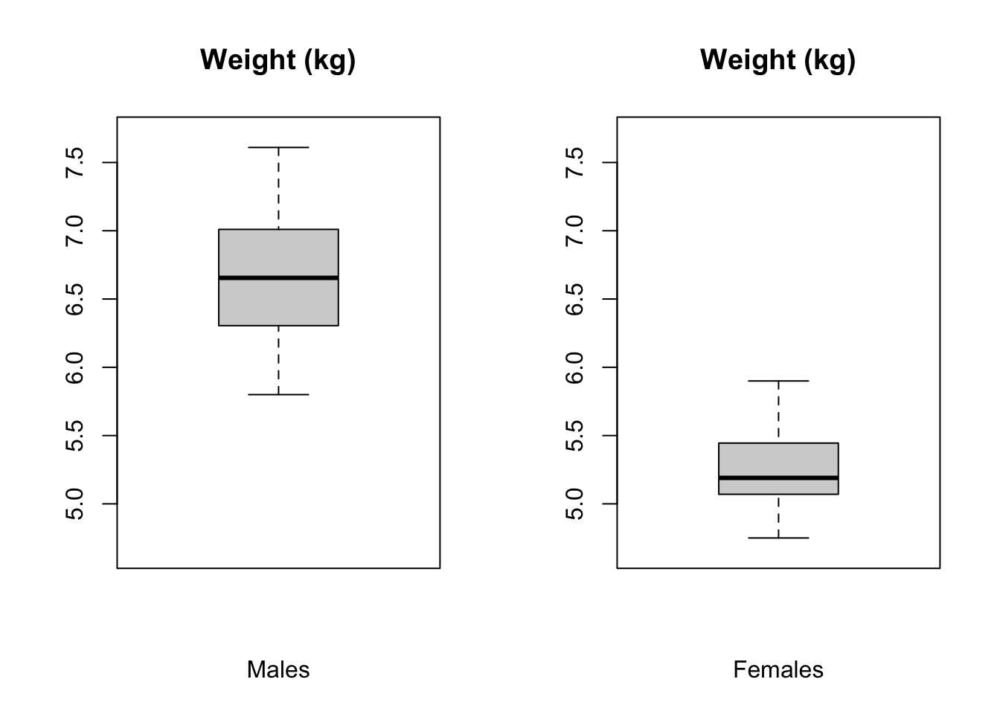
Show Code
m1 <- mean(x)
m2 <- mean(y)
mu <- 0 # you could leave this out... the default argument value is 0
s1 <- sd(x)
s2 <- sd(y)
n1 <- length(x)
n2 <- length(y)Now calculate the \(T\) statistic and test the two-tailed hypothesis that the sample means differ. Note that for the Welch’s t test, the number of degrees of freedom is calculated as:
\[df = \frac{(s_1^2/n_1 + s_2^2/n_2)^2}{(s_1^2/n_1)^2/(n_1-1)+(s_2^2/n_2)^2/(n_2-1)}\]
df <- (s2^2/n2 + s1^2/n1)^2/((s2^2/n2)^2/(n2 - 1) + (s1^2/n1)^2/(n1 - 1))
df## [1] 31.21733Show Code
alpha <- 0.05
t_stat <- (m2 - m1 - mu)/sqrt(s2^2/n2 + s1^2/n1)
t_statShow Output
## [1] -11.45952Show Code
# note that because our hypothesis is 2-tailed, it does not matter which group
# (males or females) is m1 and which is m2, so we take the absolute values of t
# below when testing whether it is greater than the critical value
critical_val <- qt(1 - alpha/2, df = df)
# identify the critical value, i.e., how far apart the means of the two samples
# need to be to be more extreme than expected by chance at the given alpha
# level
critical_valShow Output
## [1] 2.038938Show Code
test <- abs(t_stat) > critical_val # boolean test
test # if true, the two means are significantly differentShow Output
## [1] TRUEWe can visualize this as below by plotting histograms of body weights for males and females and adding the sampling distribution curves and 95% CIs around the estimates of the means for the two sexes atop of the histogram.
par(mfrow = c(1, 1))
hist(x, breaks = seq(from = minval, to = maxval, length.out = 15), xlim = c(minval,
maxval), ylim = c(0, 9), main = "Histogram and Sampling Distributions\nfor Body Weights\n(red = females, blue = males)",
col = rgb(0, 0, 1, 0.5))
# `xlim=` argument uses x and y ranges to set range for y axis
hist(y, breaks = seq(from = minval, to = maxval, length.out = 15), xlim = c(minval,
maxval), col = rgb(1, 0, 0, 0.5), add = TRUE)
curve(dnorm(x, m1, s1/sqrt(n1)), n = 1000, add = TRUE)
curve(dnorm(x, m2, s2/sqrt(n2)), n = 1000, add = TRUE)
abline(v = m1 - qt(1 - alpha/2, df = df) * s1/sqrt(n1))
abline(v = m1 + qt(1 - alpha/2, df = df) * s1/sqrt(n1))
abline(v = m2 - qt(1 - alpha/2, df = df) * s2/sqrt(n2))
abline(v = m2 + qt(1 - alpha/2, df = df) * s2/sqrt(n2))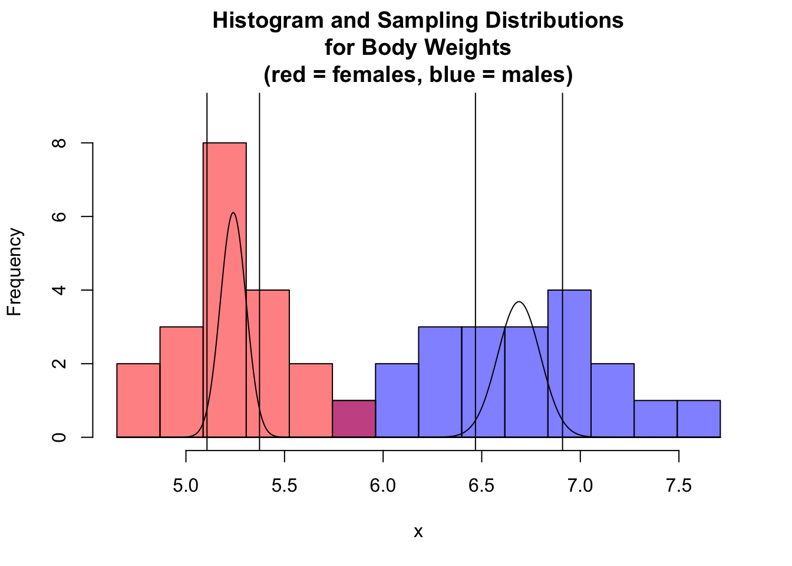
NOTE: The 95% CIs around each sample mean do not overlap, so the means are significantly different.
We can do the same thing using the t.test() function.
(abs(m1 - m2)) # difference between means## [1] 1.449t_stat <- t.test(x = x, y = y, mu = 0, alternative = "two.sided", var.equal = FALSE)
# var.equal = FALSE is the DEFAULT for `t.test()`
t_stat##
## Welch Two Sample t-test
##
## data: x and y
## t = 11.46, df = 31.217, p-value = 1.023e-12
## alternative hypothesis: true difference in means is not equal to 0
## 95 percent confidence interval:
## 1.191186 1.706814
## sample estimates:
## mean of x mean of y
## 6.689 5.240NOTE: The 95% CI returned by the t test is the interval around the DIFFERENCE between the means.
Samples with Equal Variances
There’s a simpler \(T\) statistic we can use if the variances of the two samples are more or less equal.
\[T=\frac{\bar{x_2}-\bar{x_1}-\mu}{\sqrt{s_p^2(1/n_1+1/n_2)}}\]
where:
- \(s_p^2=\frac{(n_1-1)s_1^2+(n_2-1)s_2^2}{n_1+n_2-2}\)
- \(\bar{x_1}\) and \(\bar{x_2}\) = means of observations in each sample group
- \(\mu\) = expected difference in means between sample groups (usually set to zero)
- \(s_p\) = pooled sample standard deviation
- \(n_1\) and \(n_2\) = numbers of observations in each sample group
The degrees of freedom for this test is calculated as follows:
\[df=n_1+n_2-2\]
Calculating the \(t\) statistic and degrees of freedom by hand…
s <- sqrt((((n1 - 1) * s1^2) + ((n2 - 1) * s2^2))/(n1 + n2 - 2))
t_stat <- (m2 - m1 - mu)/(sqrt(s^2 * (1/n1 + 1/n2)))
t_stat## [1] -11.45952df <- n1 + n2 - 2
df## [1] 38… matches what we see when we use t.test().
t_stat <- t.test(x = x, y = y, mu = 0, var.equal = TRUE, alternative = "two.sided")
t_stat##
## Two Sample t-test
##
## data: x and y
## t = 11.46, df = 38, p-value = 6.787e-14
## alternative hypothesis: true difference in means is not equal to 0
## 95 percent confidence interval:
## 1.193025 1.704975
## sample estimates:
## mean of x mean of y
## 6.689 5.240NOTE: A crude test for equality of variances is to divide the larger by the smaller and if the result is < 2, you can go ahead and used the pooled variance version of the test (which has many fewer degrees of freedom).
In our case, we should not really use the equal variances version of the t test, since the ratio of variances exceeds 2…
var(x)/var(y)## [1] 2.746196We can use the var.test() function to conduct an actual statistical test on the ratio of variances, which compares the ratio test statistic we just calculated to an \(F\) distribution. The \(F\) distribution is often used to model ratios of random variables and thus is useful in regression applications and, as here, for testing whether variances from two samples are different. It is dependent upon the specification of a pair of degrees of freedom values supplied as the arguments df1= and df2= (or inferred from the number of observations in each sample).
Below, the results of var.test() are saved to a variable. Calling the variable provides a brief descriptive summary.
vt <- var.test(x, y)
vt##
## F test to compare two variances
##
## data: x and y
## F = 2.7462, num df = 19, denom df = 19, p-value = 0.03319
## alternative hypothesis: true ratio of variances is not equal to 1
## 95 percent confidence interval:
## 1.086978 6.938128
## sample estimates:
## ratio of variances
## 2.746196Paired Samples
For a paired samples test, the null hypothesis is that the mean of individual paired differences between the two samples (e.g., before and after) is zero.
Our test statistic is:
\[T = \frac{d-\mu}{\sqrt{s_d^2/n}}\]
where:
- \(\bar{d}\) = mean of difference between paired samples
- \(\mu\) = expected mean difference between paired samples (usually set to zero)
- \(s_d\) = standard deviation in the set of differences between paired samples
- \(n\) = number of sample pairs
Again, note that \(\mu\) here is the expected difference between the means under the null hypothesis, which is zero, and we are dividing by the standard error of the mean for the set of differences between pairs.
CHALLENGE
Let’s play with a sample… test scores of individuals taking a certain statistics course pre and post a lecture on null hypothesis significance testing. Load in the test_scores.csv data file, look at it, plot a barchart of values before and after and construct a paired t test to evaluate the means before and after.
f <- "https://raw.githubusercontent.com/difiore/ada-datasets/main/test_scores.csv"
d <- read_csv(f, col_names = TRUE)
head(d)## # A tibble: 6 × 3
## id `Score before` `Score after`
## <dbl> <dbl> <dbl>
## 1 1 89.0 95.4
## 2 2 90.0 94.2
## 3 3 90.7 92.2
## 4 4 82.1 92.4
## 5 5 87.4 94.8
## 6 6 88.3 90.6x <- d$`Score after` - d$`Score before`
m <- mean(x)
mu <- 0 # can leave this out
s <- sd(x)
n <- length(x)
se <- s/sqrt(n)
par(mfrow = c(1, 2))
boxplot(d$`Score before`, ylim = c(80, 100), main = "Score", xlab = "Before")
boxplot(d$`Score after`, ylim = c(80, 100), main = "Score", xlab = "After")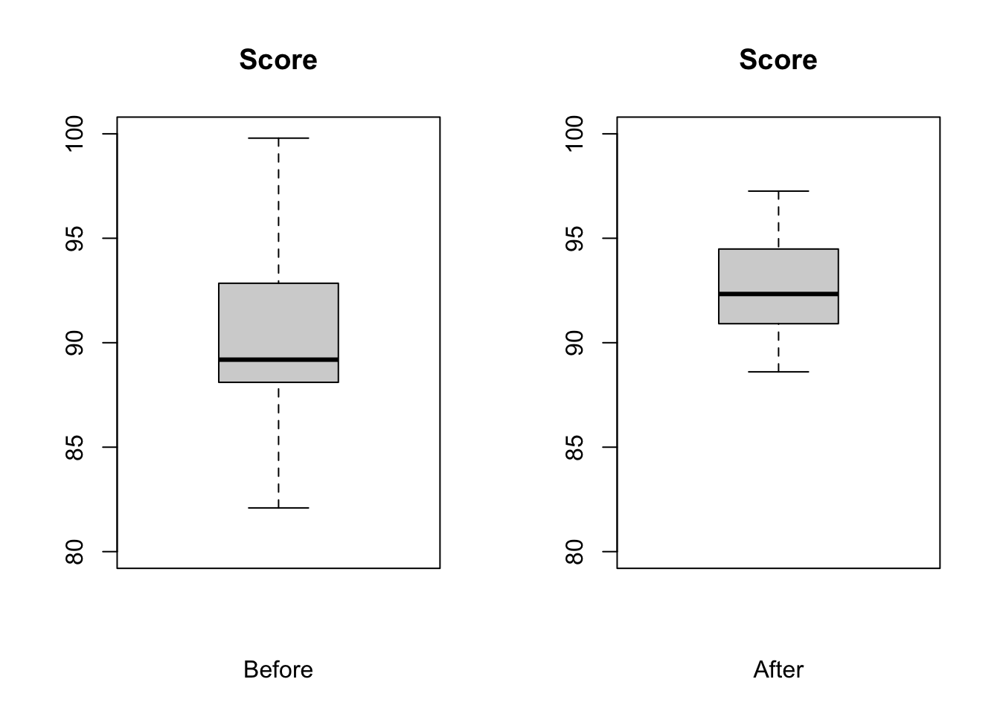
t_stat <- (m - mu)/se
t_stat## [1] 1.789636alpha <- 0.05
critical_val <- qt(1 - alpha/2, df = n - 1) # identify critical values
critical_val## [1] 2.093024test <- abs(t_stat) > critical_val # boolean test
test## [1] FALSEt.test(d$`Score before`, d$`Score after`, df = n - 1, alternative = "two.sided",
paired = TRUE)##
## Paired t-test
##
## data: d$`Score before` and d$`Score after`
## t = -1.7896, df = 19, p-value = 0.08946
## alternative hypothesis: true mean difference is not equal to 0
## 95 percent confidence interval:
## -4.830292 0.377435
## sample estimates:
## mean difference
## -2.226429Working with Proportions
One Sample \(Z\) Test
As we have seen, the theoretical sampling distribution of sample means for independent and identically distributed random continuous variables is roughly normal (and, as shown by the CLT, this distribution increasingly approaches normal as sample size increases). Similarly, the sampling distribution for another kind of sample statistic, the number of “successes” \(x\) out of a series of \(k\) trials is also roughly normally distributed. If the true population proportion of “successes” is \(\pi\), then the sampling distribution for the proportion of successes in a sample of size \(n\) is expected to be roughly normally distributed with mean = \(\pi\) and standard error = \(\sqrt{\pi(1-\pi)/n}\).
Let’s set up a simulation to show this…
First we create a population of 500 “1”s and 500 “0”s, i.e., where \(\pi\) = 0.5…
pop <- c(rep(0, 500), rep(1, 500))Now, we will take 1000 random samples of size \(n\)=10 from that population and calculate the proportion of “1”s in each sample…
pi <- 0.5
x <- NULL
n <- 10
for (i in 1:1000) {
x[i] <- mean(sample(pop, size = n, replace = FALSE))
# taking the mean of a bunch of 0s and 1s yields the proportion of 1s!
}
m <- mean(x)
m## [1] 0.4886s <- sd(x)
s## [1] 0.1566352se <- sqrt(pi * (1 - pi)/n)
se # the SE is an estimate of the SD of the sampling distribution## [1] 0.1581139The same is true if we create a population of 800 “1”s and 200 “0”s, i.e., where \(\pi\) = 0.8…
pop <- c(rep(0, 800), rep(1, 200))
pi <- 0.8
x <- NULL
n <- 10
for (i in 1:1000) {
x[i] <- mean(sample(pop, size = n, replace = FALSE))
# taking the mean of a bunch of 0s and 1s yields the proportion of 1s!
}
m <- mean(x)
m## [1] 0.2018s <- sd(x)
s## [1] 0.1240651se <- sqrt(pi * (1 - pi)/n)
se # the SE is an estimate of the SD of the sampling distribution## [1] 0.1264911This normal approximation is true as long as \(n\) is fairly large and \(\pi\) is not close to 0 or 1. One rule of thumb is to check that both \(n\times\pi\) and \(n\times(1-\pi)\) are greater than 5.
With all this in mind, we can construct \(Z\) statistics for proportions just like we constructed \(Z\) and \(T\) statistics for means and test those proportions for differences from an expected value or for differences between two sample proportions. The \(Z\) statistic for proportions takes the same general form as that for means…
\(Z =\) (observed statistic - expected statistic) / expected standard error
or,
\[Z = \frac{\hat{p}-\pi}{\sqrt{\pi(1-\pi)/n}}\]
where:
- \(\hat{p}\) = proportion in sample
- \(\pi\) = expected proportion
- \(n\) = number of observations in sample
CHALLENGE
A neotropical ornithological working in the western Amazon deploys 30 mist nets in a 100 ha grid.
She monitors the nets on one morning and records whether or not she captures any birds in the net (i.e., a “success” or “failure” for every net during a netting session). The following vector summarizes her netting results:
v <- c(0, 1, 1, 1, 0, 1, 0, 0, 1, 1, 0, 0, 1, 1, 0, 1, 1, 0, 0, 1, 1, 1, 0, 1, 1,
0, 1, 0, 1, 1)Her netting success over the previous three seasons suggests that she should catch birds in 80% of her nets. This season, she feels, her success rate is lower than in previous years (so… this implies that we want to do a lower one-tailed test). Does her trapping data support this hypothesis?
- What is \(H_0\)?
- What is \(H_A\)?
- Are both \(n\times\pi\) and \(n\times(1-\pi)\) > 5?
- Calculate \(Z\) statistic and the p value associated with \(Z\). We use the
lower.tail=TRUEargument topnorm()because we’re testing a lower-tailed one-tailed hypothesis.
Show Code
phat <- mean(v) # the mean of binomial 0,1 variables yields the proportion!
phatShow Output
## [1] 0.6Show Code
pi <- 0.8
n <- 30
z <- (phat - pi)/sqrt(pi * (1 - pi)/30)
# we use the population expected proportion in the denominator
zShow Output
## [1] -2.738613Show Code
p <- pnorm(z, lower.tail = TRUE)
pShow Output
## [1] 0.00308495Graphically, our \(Z\) value (in blue) is farther from the center of the standard normal curve than the critical value marking the lower 5% of the total distribution (in red).
par(mfrow = c(1, 1))
curve(dnorm(x, 0, 1), xlim = c(-4, 4), ylab = "", yaxt = "n", xlab = "SD", main = "Sampling Distribution")
abline(v = z, col = "blue", lwd = 2)
abline(v = qnorm(0.05), col = "red")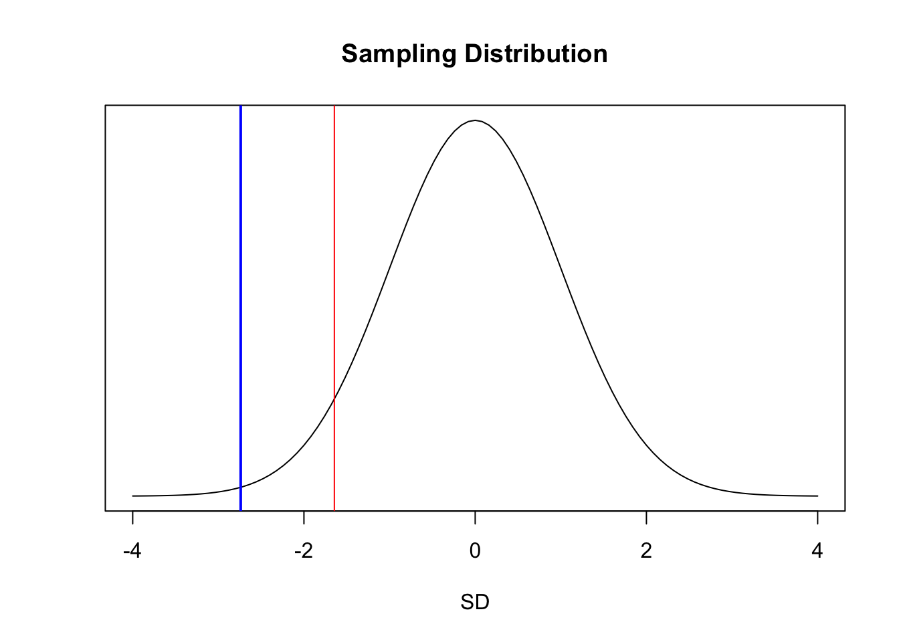
The 95% confidence interval around the sample proportion can be estimated, based on the normal distribution, as follows:
lower <- phat - qnorm(0.975) * sqrt(phat * (1 - phat)/30)
upper <- phat + qnorm(0.975) * sqrt(phat * (1 - phat)/30)
ci <- c(lower, upper)
ci## [1] 0.4246955 0.7753045This approach using quantiles of the standard normal distribution is but one method of calculating CIs for proportion data, and it generates a CI referred to as a Wald confidence interval. Note that this CI does not include the value of \(\pi\)… rather, \(\pi\) is greater than the upper bound of the CI, suggesting that the observed success rate is indeed lower than in previous years.
We can do the same test with a one-liner in R…
pt <- prop.test(x = sum(v), n = length(v), p = 0.8, conf.level = 0.95, alternative = "less",
correct = FALSE) # use correct=FALSE if we satisfy that n*pi and n*(1-pi) are both >5
pt##
## 1-sample proportions test without continuity correction
##
## data: sum out of lengthv out of v
## X-squared = 7.5, df = 1, p-value = 0.003085
## alternative hypothesis: true p is less than 0.8
## 95 percent confidence interval:
## 0.0000000 0.7328738
## sample estimates:
## p
## 0.6NOTE: The CI returned here is different than we calculated based on the normal distribution, although the p value is the same…
prop.test()implements a slightly different procedure for estimating the CI rather than basing this on the normal distribution and the CLT.
Two Sample \(Z\) Test
The \(Z\) statistic for the two-sample test comparing proportions is also very similar to that for comparing means.
\[Z=\frac{\hat{p_2}-\hat{p_1}-\pi}{\sqrt{p^*(1-p^*)(1/n_1+1/n_2)}}\]
where:
- \(p^* = \frac{x_1 + x_2}{n_1+n_2}\) = pooled proportion
- \(\hat{p_1}\) and \(\hat{p_2}\) = proportions of “successes” in each sample group
- \(\pi\) = expected difference in proportions between sample groups (usually set to zero)
- \(n_1\) and \(n_2\) = numbers of observations in each sample group
CHALLENGE
A biologist studying two species of tropical bats captures females of both species in a mist net over the course of a week of nightly netting. For each species, the researcher records whether females is lactating or not.
The two vectors below summarize the data for each species.
species1 <- c(1, 0, 1, 1, 0, 0, 1, 1, 0, 0, 1, 1, 1, 1, 0, 0, 1, 1, 0, 0, 1, 1, 0,
1, 0)
species2 <- c(1, 1, 0, 0, 1, 1, 1, 1, 0, 1, 0, 1, 1, 1, 0, 1, 0, 1, 1, 1, 1, 1, 0,
0, 1, 1, 0, 1, 1, 1)Based on your mist netting data, do the species differ significantly in the proportion of lactating females? What are \(H_0\) and \(H_A\)?
pstar <- (sum(species1) + sum(species2))/(length(species1) + length(species2))
pstar## [1] 0.6363636phat1 <- mean(species1)
phat1## [1] 0.56phat2 <- mean(species2)
phat2## [1] 0.7pi <- 0
z <- (phat2 - phat1 - pi)/sqrt((pstar * (1 - pstar)) * (1/length(species1) + 1/length(species2)))
z## [1] 1.074709p_upper <- 1 - pnorm(z, lower.tail = TRUE)
p_lower <- pnorm(z, lower.tail = FALSE)
# two-tailed probability, so we add the upper and lower tails
p <- p_upper + p_lower
p## [1] 0.2825049critical_val <- qnorm(1 - alpha/2) # identify critical values
critical_val## [1] 1.959964test <- abs(z) > critical_val # boolean test
test## [1] FALSEWe can use the prop.test() function to do this in one line.
prop.test(x = c(sum(species2), sum(species1)), n = c(length(species2), length(species1)),
alternative = "two.sided", correct = FALSE)##
## 2-sample test for equality of proportions without continuity correction
##
## data: c out of csum(species2) out of length(species2)sum(species1) out of length(species1)
## X-squared = 1.155, df = 1, p-value = 0.2825
## alternative hypothesis: two.sided
## 95 percent confidence interval:
## -0.1144634 0.3944634
## sample estimates:
## prop 1 prop 2
## 0.70 0.56# use correct=FALSE if we satisfy that n*pi and n*(1-pi) are both >5Concept Review
\(Z\) and \(T\) tests are used to evaluate whether a given sample statistic (e.g., a mean or proportion) deviates significantly from what is expected under a null model or whether two samples statistics deviate significantly from one another
They are used for dealing with normally distributed, continuous variables or those that can be approximated closely by the normal distribution (e.g., proportion data)
- We REJECT a \(H_0\) if the p value obtained for a given \(Z\) or \(T\) test statistic is < \(\alpha\)
- CIs for our sample statistic are calculated as \(mean ± [T_{(1-\alpha/2)}\) or \(Z_{(1-\alpha/2)}] \times SE\), and we can REJECT an \(H_0\) if the \((1-\alpha)\) CI around does not include the expected value of the statistic
- When we are dealing with data for a population or for sample sizes > 30, or when we are dealing with proportions, we use \(Z\) distribution quantiles for calculating CIs and p values, but for sample sizes < 30, we use \(t\) distribution quantiles
Formula Summary
The \(Z\) or \(T\) Statistic for Testing a Single Mean
\[Z\ {\rm or}\ T = \frac{\bar{x}-\mu}{s/\sqrt{n}}\]
The \(T\) Statistic for Comparing Means
Unequal Variance
\[Z\ {\rm or}\ T = \frac{\bar{x_2} - \bar{x_1} - \mu}{\sqrt{s_1^2/n_1 + s_2^2/n_2}}\]
Equal Variance
\[Z\ {\rm or}\ T =\frac{\bar{x_2}-\bar{x_1}-\mu}{\sqrt{s_p^2(1/n_1+1/n_2)}}\]
Paired Samples
\[Z\ {\rm or}\ T = \frac{d-\mu}{\sqrt{s_d^2/n}}\]
The \(Z\) Statistic for Testing a Single Proportion
\[Z = \frac{\hat{p}-\pi}{\sqrt{\pi(1-\pi)/n}}\]
The \(Z\) Statistic for Comparing Proportions
\[Z = \frac{\hat{p_2}-\hat{p_1}-\pi}{\sqrt{p^*(1-p^*)(1/n_1+1/n_2)}}\]